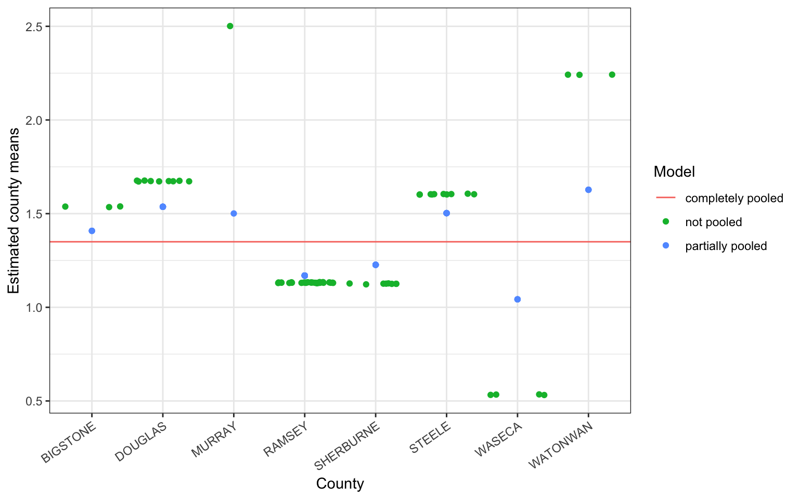

Radon is a radioactive gas that naturally occurs in soils around the U.S. As radon decays it releases other radioactive elements, which stick to, among other things, dust particles commonly found in homes. The EPA believes radon exposure is one of the leading causes of cancer in the United States.
This example uses a dataset named radon from the rstanarm package. The dataset contains \(N=919\) observations, each measurement taken within a home that is located within one of the \(J=85\) sampled counties in Minnesota. The first six rows of the dataframe show us that the county Aitkin has variable levels of \(log(radon)\). Our goal is to build a model to predict \(log(radon)\).
To highlight the benefits of random intercepts models we will compare three linear regression models:
complete pooling
no pooling
partial pooling (the random intercept model)
Complete Pooling
The complete pooling model pools all counties together to give one single estimate of the \(log(radon)\) level.
No Pooling
No pooling refers to the fact that no information is shared among the counties. Each county is independent of the next.
Partial Pooling
The partial pooling model, partially shares information among the counties.
Each county should get a unique intercept such that the collection of county intercepts are randomly sampled from a normal distribution with mean \(0\) and variance \(\sigma^2_{\alpha}\).
Because all county intercepts are randomly sampled from the same theoretical population, \(N(0, \sigma^2_{\alpha})\), information is shared among the counties. This sharing of information is generally referred to as shrinkage, and should be thought of as a means to reduce variation in estimates among the counties. When a county has little information to offer, it’s estimated intercept will be shrunk towards to overall mean of all counties.
The plot below displays the overall mean as the complete pooling estimate (solid, horizontal line), the no pooling and partial pooling estimates for 8 randomly selected counties contained in the radon data. The amount of shrinkage from the partial pooling fit is determined by a data dependent compromise between the county level sample size, the variation among the counties, and the variation within the counties.

Generally, we can see that counties with smaller sample sizes are shrunk more towards the overall mean, while counties with larger sample sizes are shrunk less.
Caution
The fitted values corresponding to different observations within each county of the no-pooling model are jittered to help the eye determine approximate sample size within each county.
Estimates of variation within each county should not be determined from this arbitrary jittering of points.
17.2 Mathematical Models
The three models considered set \(y_n=log(radon)\), and \(x_n\) records floor (0=basement, 1=first floor) for homes \(n=1, \ldots, N\).
17.2.1 Complete Pooling
The complete pooling model pools all counties together to give them one single estimate of the \(log(radon)\) level, \(\hat{\alpha}\).
The error term \(\epsilon_n\) may represent variation due to measurement error, within-house variation, and/or within-county variation.
Fans of the random intercept model think that \(\epsilon_n\), here, captures too many sources of error into one term, and think that this is a fault of the completely pooled model.
The no pooling model gives each county an independent estimate of \(log(radon\)), \(\hat{\alpha}_{j[n]}\).
Read the subscript \(j[n]\) as home \(n\) is nested within county \(j\). Hence, all homes in each county get their own independent estimate of \(log(radon)\).
This is equivalent to the fixed effects model
Here again, one might argue that the error term captures too much noise.
The random intercept model, better known as the partial pooling model, gives each county an intercept term \(\alpha_j[n]\) that varies according to its own error term, \(\sigma_{\alpha}^2\).
This error term measures within-county variation
Separating measurement error (\(\sigma_{\epsilon}^{2}\)) from county level error (\(\sigma_{\alpha}^{2}\)) .
This multi-level modeling shares information among the counties to the effect that the estimates \(\alpha_{j[n]}\) are a compromise between the completely pooled and not pooled estimates.
When a county has a relatively smaller sample size and/or the variance \(\sigma^{2}_{\epsilon}\) is larger than the variance \(\sigma^2_{\alpha}\), estimates are shrunk more from the not pooled estimates towards to completely pooled estimate.
Statistics can be thought of as the study of uncertainty, and variance is a measure of uncertainty (and information). So yet again we see that we’re partitioning the variance. Recall that
Measurement error: \(\sigma^{2}_{\epsilon}\)
County level error: \(\sigma^{2}_{\alpha}\)
The intraclass correlation (ICC, \(\rho\)) is interpreted as
the proportion of total variance that is explained by the clusters.
the expected correlation between two individuals who are drawn from the same cluster.
When \(\rho\) is large, a lot of the variance is at the macro level
units within each group are very similar
If \(\rho\) is small enough, one may ask if fitting a multi-level model is worth the complexity.
No hard and fast rule to say “is it large enough?”
rules of thumb include
under 10% (0.1) then a single level analysis may still be appropriate,
over 10% (0.1) then a multilevel model can be justified.
17.4 Fitting models in R
Complete Pooling
The complete pooling model is fit with the function lm, and is only modeled by 1 and no covariates. This is the simple mean model, and is equivelant to estimating the mean.
The no pooling model is also fit with the function lm, but gives each county a unique intercept in the model.
fit_nopool <-lm(log_radon ~-1+ county, data=radon)fit_nopool.withint <-lm(log_radon ~ county, data=radon)
Dependent variable:
log_radon
(1)
(2)
Constant
0.715* (0.383)
countyAITKIN
0.715* (0.383)
countyANOKA
0.891*** (0.106)
0.176 (0.398)
countyBECKER
1.090** (0.443)
0.375 (0.585)
Note:
p<0.1; p<0.05; p<0.01
The first model (fit_nopool) is coded as lm(log_radon ~ -1 + county, data=radon), and so does not have the global intercept (that’s what the -1 does). Each \(\beta\) coefficient is the estimate of the mean log_radon for that county.
The second model (fit_nopool.withint) is coded as lm(log_radon ~ county, data=radon) and is what we are typically used to fitting.
Each estimate is the difference in log(radon) for that county compared to a reference county.
Because county is alphabetical, the reference group is AITKIN.
Aitkin’s mean level of log(radon) shows up as the intercept or Constant term.
For display purposes only, only the first 3 county estimates are being shown.
Partial Pooling
The partial pooling model is fit with the function lmer(), which is part of the lme4 package.
The extra notation around the input variable (1|county) dictates that each county should get its own unique intercept \(\alpha_{j[n]}\).
The fixed effects portion of the model output of lmer is similar to output from lm, except no p-values are displayed. The fact that no p-values are displayed is a much discussed topic. The author of the library lme4, Douglas Bates, believes that there is no “obviously correct” solution to calculating p-values for models with randomly varying intercepts (or slopes); see here for a general discussion.
summary(fit_partpool)
Linear mixed model fit by REML ['lmerMod']
Formula: log_radon ~ (1 | county)
Data: radon
REML criterion at convergence: 2184.9
Scaled residuals:
Min 1Q Median 3Q Max
-4.6880 -0.5884 0.0323 0.6444 3.4186
Random effects:
Groups Name Variance Std.Dev.
county (Intercept) 0.08861 0.2977
Residual 0.58686 0.7661
Number of obs: 919, groups: county, 85
Fixed effects:
Estimate Std. Error t value
(Intercept) 1.350 0.047 28.72
The random effects portion of the lmer output provides a point estimate of the variance of component \(\sigma^2_{\alpha} = 0.09\) and the model’s residual variance, \(\sigma_\epsilon = 0.57\).
The fixed effect here is interpreted in the same way that we would in a normal fixed effects mean model, as the global predicted value of the outcome of log_radon.
The random intercepts aren’t automatically shown in this output. We can visualize these using a forestplot. We use the plot_model() function from the sjPlot package, on the fit_partpool model, we want to see the random effects (type="re"), and we want to sort on the name of the random variable, here it’s "(Intercept)".
Notice that these effects are centered around 0. Refering back @ref(mathri), the intercept \(\beta_{0j}\) was modeled equal to some average intercept across all groups \(\gamma_{00}\), plus some difference. What is plotted above is listed in a table below, showing that if you add that random effect to the fixed effect of the intercept, you get the value of the random intercept for each county.
By allowing individuals within counties to be correlated, and at the same time let counties be correlated, we allow for some information to be shared across counties.
Thus we come back to that idea of shrinkage. Below is a numeric table version of the plot in Section 17.1.
Similar to logistic regression, estimates from multi-level models typically aren’t estimated directly using maximum likelihood (ML) methods.
Iterative methods like Restricted (residual) Maximum Likelihood (REML) are used to get approximations.
REML is typically the default estimation method for most packages.
Details of REML are beyond the scope of this class, but knowing the estimation method is important for two reasons
Some type of testing procedures that use the likelihood ratio may not be valid.
Comparing models with different fixed effects using a likelihood ratio test is not valid. (Must use Wald Test instead)
Can still use AIC/BIC as guidance (not as formal tests)
Iterative procedures are procedures that perform estimation steps over and over until the change in estimates from one step to the next is smaller than some tolerance.
Sometimes this convergence to an answer never happens.
You will get some error message about the algorithm not converging.
The more complex the model, the higher chance this can happen
scaling, centering, and avoiding collinearity can alleviate these problems with convergence.
You can change the fitting algorithm to use the Log Likelihood anyhow, it may be slightly slower but for simple models the estimates are going to be very close to the REML estimate. Below is a table showing the estimates for the random intercepts,
REML
MLE
AITKIN
1.1107728
1.1143654
ANOKA
0.9427047
0.9438526
BECKER
1.2688325
1.2700351
BELTRAMI
1.2694025
1.2702493
BENTON
1.3243796
1.3245917
BIGSTONE
1.4081133
1.4068866
and the same estimates for the variance terms.
VarCorr(fit_partpool)
Groups Name Std.Dev.
county (Intercept) 0.29767
Residual 0.76607
VarCorr(fit_partpool_MLE)
Groups Name Std.Dev.
county (Intercept) 0.29390
Residual 0.76607
So does it matter? Yes and no. In general you want to fit the models using REML, but if you really want to use a Likelihood Ratio test to compare models then you need to fit the models using ML.
17.6 Including Covariates
A similar sort of shrinkage effect is seen with covariates included in the model.
Consider the covariate \(floor\), which takes on the value \(1\) when the radon measurement was read within the first floor of the house and \(0\) when the measurement was taken in the basement. In this case, county means are shrunk towards the mean of the response, \(log(radon)\), within each level of the covariate.
Covariates are fit using standard + notation outside the random effects specification, i.e. (1|county).
Note that in this table format, \(\tau_{00} = \sigma^{2}_{\alpha}\) and \(\sigma^{2} = \sigma^{2}_{\epsilon}\). The estimated random effects can also be easily visualized using functions from the sjPlot package.
Plot the slope of the fixed effect for each level of the random effect sjp.lmer(ri.with.x, type="ri.slope") – this is being depreciated in the future but works for now. Eventually I’ll figure out how to get this plot out of plot_model().
17.7 More Random Effects
This section has not been built yet. Reference this set of notes in the meantime.
What if you think the slope along some \(x\) should vary (such as over time)?
17.8 Centering terms
Sometimes it might be better to measure the effect of a specific level relative to the average within cluster, rather than overall average.
The “frog pond” effect
A student with an average IQ may be more confident and excel in a group of students with less than average IQ
But they may be discouraged and not perform to their potential in a group of students with higher than average IQ.
If the effect of a specific level of a factor is dependent on where the level is in reference to other cluster members, more so than where the level is in reference to all other participants, the model should be adjusted for as follows:
Instead of using the actual value in the regression model you would…
calculate the cluster specific average
calculate the difference between individual and specific cluster average
both cluster average (macro) and difference (micro) are included in the model.
17.8.1 A generic dplyr approach to centering.
group.means <- data %>% group_by(cluster) %>% summarise(c.ave=mean(variable))
newdata <- data %>% left_join(group.means) %>% mutate(diff = variable - c.ave)
Create a new data set that I call group.means that
takes the original data set and then (%>%)…
groups it by the clustering variable so that all subsequent actions are done on each group
makes a new variable that I call c.ave that is the average of the variable of interest
I then take the original data set, and then
merge onto data, this group.means data set that only contains the clustering variable, and the cluster average variable c.ave.
I also toss in a mutate to create a new variable that is the difference between the variable of interest and the group averages.
and assign all of this to a newdata set
17.9 Specifying Correlation Structures
Independence: In standard linear models, the assumption on the residuals \(\epsilon_{i} \sim \mathcal{N}(0, \sigma_{\epsilon}^{2})\) means that
The variance of each observation is \(\sigma_{\epsilon}^{2}\)
The covariance between two different observations \(0\)
Consider \(n=4\) observations, \(y_{1}, \ldots , y_{4}\). Visually the covariance matrix between these four observations would look like this:
Compound Symmetry or Exchangeable: The simplest covariance structure that includes correlated errors is compound symmetry (CS). Here we see correlated errors between individuals, and note that these correlations are presumed to be the same for each pair of responses, namely \(\rho\).
Autoregressive: Imagine that \(y_{1}, \ldots , y_{4}\) were 4 different time points on the same person. The autoregressive (Lag 1) structure considers correlations to be highest for time adjacent times, and a systematically decreasing correlation with increasing distance between time points. This structure is only applicable for evenly spaced time intervals for the repeated measure.
Unstructured: The Unstructured covariance structure (UN) is the most complex because it is estimating unique correlations for each pair of observations. It is not uncommon to find out that you are not able to use this structure simply because there are too many parameters to estimate.